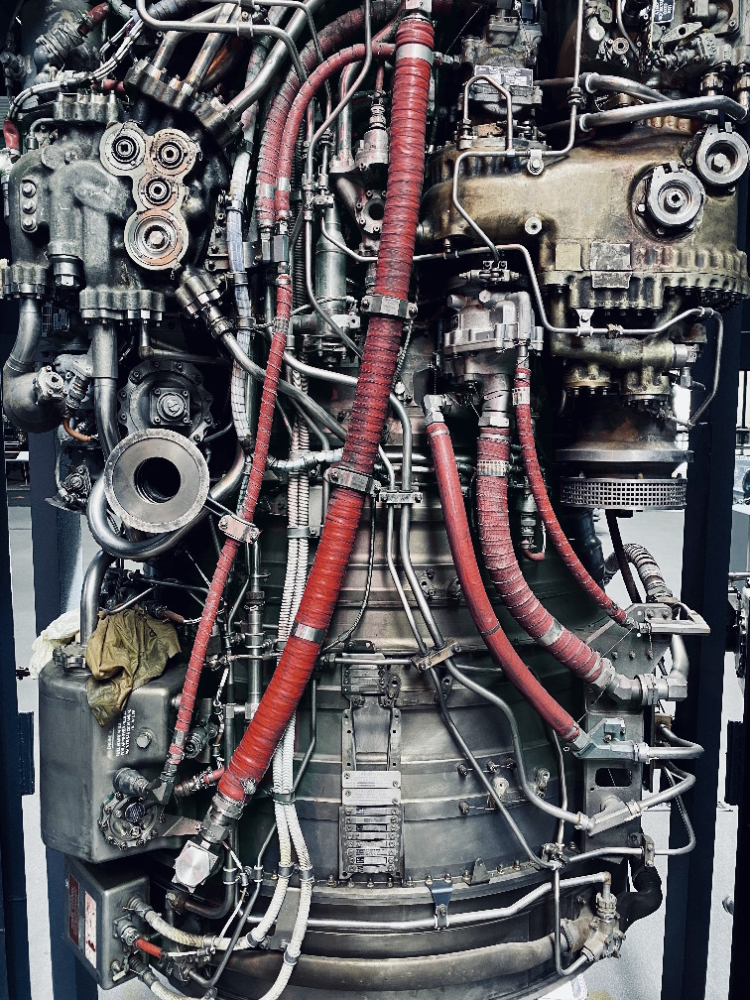

Dual NTR Propulsion System
The Flux Overflow is powered by two high-efficiency Nuclear Thermal Rocket (NTR) engines mounted on independent 180° gimbal rings. Each engine can rotate from forward thrust (acceleration) to reverse thrust (deceleration or push-mode operations) without reorienting the spacecraft.
| 1 Engine | Dual Engines | |
|---|---|---|
| Exhaust Velocity | 9,240 m/s | |
| Isp | 925-960 s | |
| Thrust | 1.8 MN | 3.6 MN |
| Acceleration | 0.18 g | 0.36 g |
The propellant is liquid hydrogen.
Hydrogen propellant is superheated in a high-temperature reactor core and expelled through composite carbon-carbon nozzles. The high exhaust velocity enables exceptional deep-space maneuverability while maintaining unmatched fuel economy.
The engines are rated for 18,000 operational hours and include autonomous restart capability after cold soak periods exceeding 5 years.